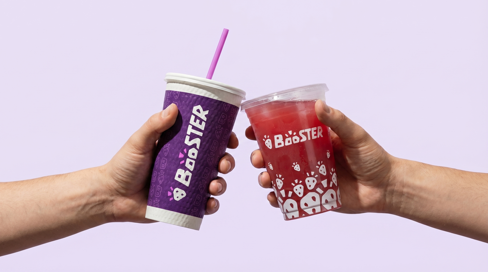

Mission
Move Booster from a legacy smoothie identity into a daily-use nourishment system that helps people choose faster and understand more.

Brand Strategy
Clearer daily choices.
The foundation behind the system.
Booster Source is a long-term strategy to reposition Booster Juice as a transparent daily nourishment brand. It organizes wellness around visible nutritional value, clearer sourcing, and more responsible systems.
Mission
Move Booster from a legacy smoothie identity into a daily-use nourishment system that helps people choose faster and understand more.
Vision
Become Canada's most trusted and transparent daily nourishment brand.
Purpose
Help people make better daily food choices by showing what nourishes them, where it comes from, and how it is made more responsibly.
Clarity
Make choices easier to understand and easier to navigate.
Responsibility
Align claims with better materials, operations, and measurable systems.
Nourishment
Focus on real daily needs: energy, protein, recovery, hydration, balance, and breakfast.
Transparency
Show what is inside each product and what sits behind it.
Community
Support the people and places connected to the Booster ecosystem.
Momentum
Fit active routines with speed, ease, and repeat relevance.
The opportunity is between smoothie brands, convenience players, and credible daily nourishment. Booster can keep access and speed while becoming more functional, transparent, and routine-based.
Routine Pragmatists
People who want better daily food decisions without decoding wellness jargon. They need reliable benefit cues, fast ordering, and repeatable routines.
Active Daily Users
Customers moving between morning, midday, post-workout, and reset moments. They respond to need states, visible nutrition, and clear add-in logic.
Trust Seekers
Customers who are willing to pay more when the brand makes sourcing, materials, nutrition, and responsibility easier to verify.
Sustainability is treated as operational proof: clearer packaging, visible material choices, disposal behavior, sourcing transparency, and public progress reporting.
Supply & Sourcing
Make ingredients, origins, and sourcing logic more visible. Use QR-led source journeys, grower stories, ingredient standards, and plain-language nutrition explanations.
Responsible Operations
Align the wellness promise with clearer packaging, disposal, logistics, and materials systems so responsibility feels visible and credible.
Social Stewardship
Connect the brand to specific local contribution, youth wellness, community programs, and proof-based storytelling.
Transparency
Publish what is known, what is improving, and what is still in progress. Avoid vague eco language unless it can be tied to a real system or measurable behavior.
Need States
Organize menu choices around energy, protein, recovery, focus, balance, hydration, and breakfast.
Source Visibility
Show ingredient origins, proteins, boosters, sweeteners, and simplified source journeys.
Material Guidance
Make cup, lid, sleeve, bag, straw, and disposal instructions clearer at point of use.
Public Progress
Report packaging, waste, sourcing, and initiative progress with specific language and regular updates.

Daily Nourishment
Need-state bundles, product architecture, visible nutrition, and routine rewards.

Responsible Operations
Packaging materials, disposal instructions, shipping logic, and progress reporting.